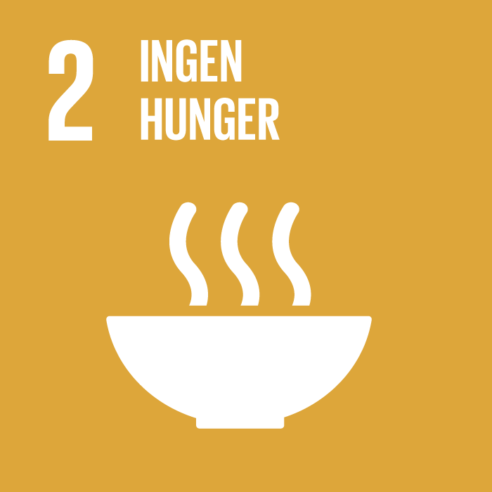

Globala Mål




Ingen Fattigdom
Ingen Hunger
God Hälsa och Välbefinnande
God Utbildning
Fattigdom omfattar fler dimensioner än den ekonomiska. Fattigdom innebär även brist på frihet, inflytande, hälsa, utbildning och säkerhet. Det brukar kallas för multidimensionell fattigdom. Idag lever 1,3 miljarder människor i multidimensionell fattigdom och av dessa är hälften under 18 år.
Hunger är den främsta dödsorsaken i världen och idag lever ungefär 821 miljoner människor i världen i hunger. Brist på mat är en mänsklig katastrof som har långsiktiga effekter för människors hälsa och samhällens möjlighet till utveckling och tillväxt.
God hälsa är en grundläggande förutsättning för människors möjlighet att nå sin fulla potential och att bidra till samhällets utveckling. Människors hälsa påverkas av ekonomiska, ekologiska och sociala faktorer och mål 3 inkluderar alla dimensioner och människor i alla åldrar.
Utbildning är en grundläggande mänsklig rättighet. Trots det beräknas fortfarande 774 miljoner människor i världen inte kunna skriva och läsa, varav två tredjedelar är kvinnor. Forskning visar att inkluderande utbildning av god kvalitet för alla är en av de viktigaste grunderna för välstånd, hälsa och jämställdhet i varje samhälle.